Джеймс Тиссо - ИЛЛЮСТРАТОР БИБЛИИ
Блестящий живописец Джеймс Тиссо, интересен мне прежде всего своим библейским циклом работ. Долгое время он проводит в Палестине, стремясь передать свои личные впечатления от увиденного. Начав свою творческую карьеру с салонной живописи, Тиссо посвящает весь свой талант творческому исследованию Св.Писаний. В этой статье я коротко хочу взглянуть на его путь к теме, которая стала для него важнейшей.
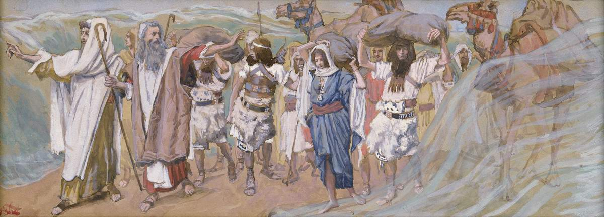
все картинки кликабельны
Думаю, творческое служение Тиссо без преувеличения можно назвать подвигом. Он создает . более 450 (по некоторым источникам – до 700) работ. С кистью в руках он старается «прочитать» всю Библию. Книга, некогда бывшая путеводителем его матери, становится для него не просто настольной, но окном, через которое он стремится смотреть на мир и его Творца.
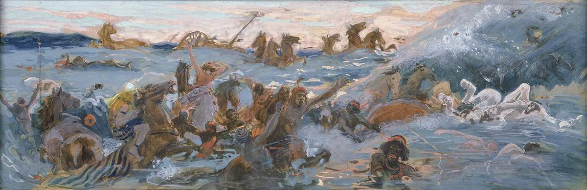
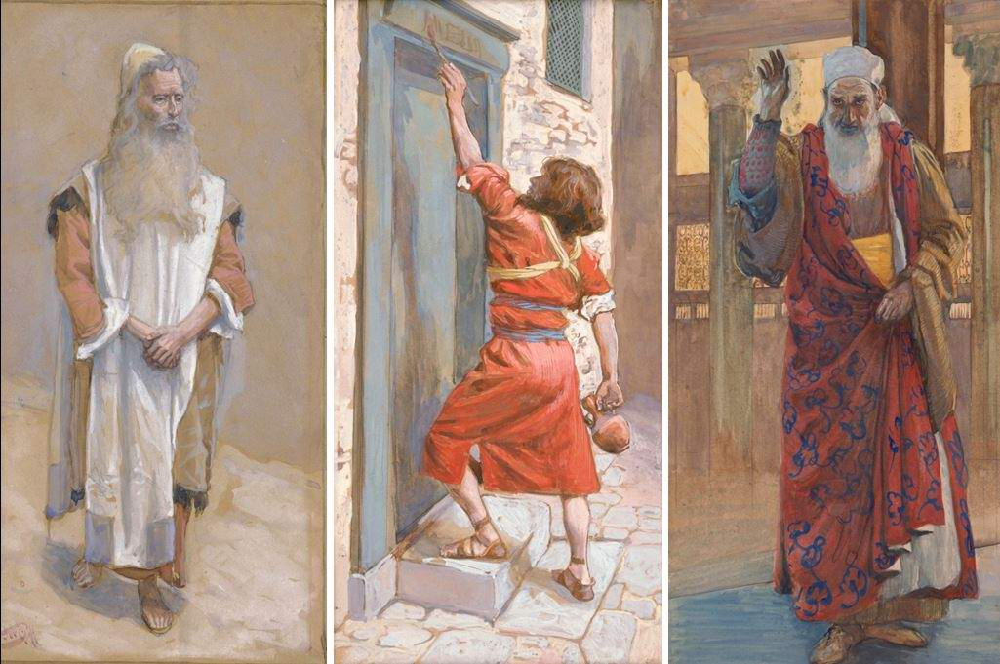
Жак Жозеф Тиссо (1836 - 1902 г.) - французский художник и иллюстратор, более известен как Джеймс Тиссо.
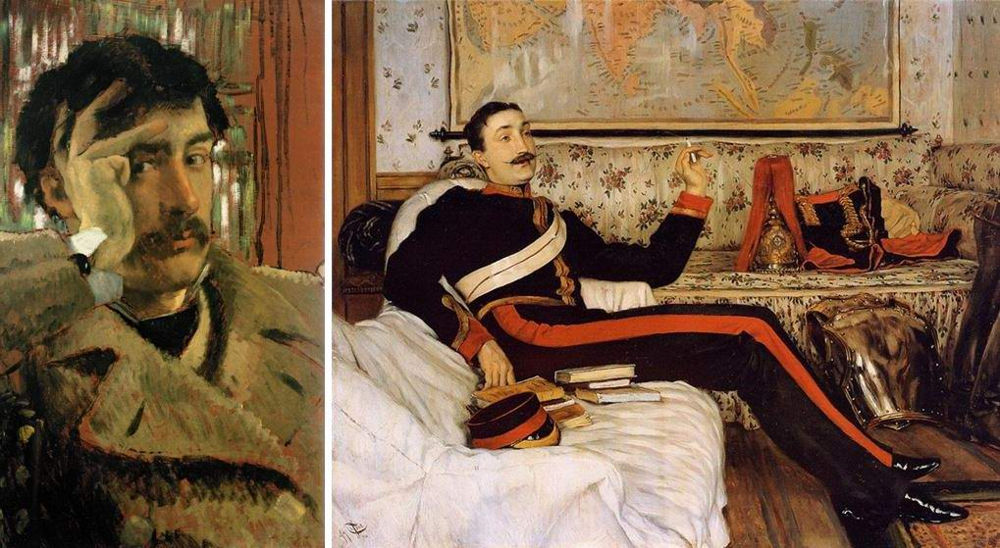
Он родился в портовом городе Нанте, Франция. Учился в Парижской школе изящных искусств.
В 1871 году он уезжает из Парижа в Лондон будучи уже успешным парижским художником. Он был известен изображениями модно одетых женщин в различных сценах повседневной жизни.
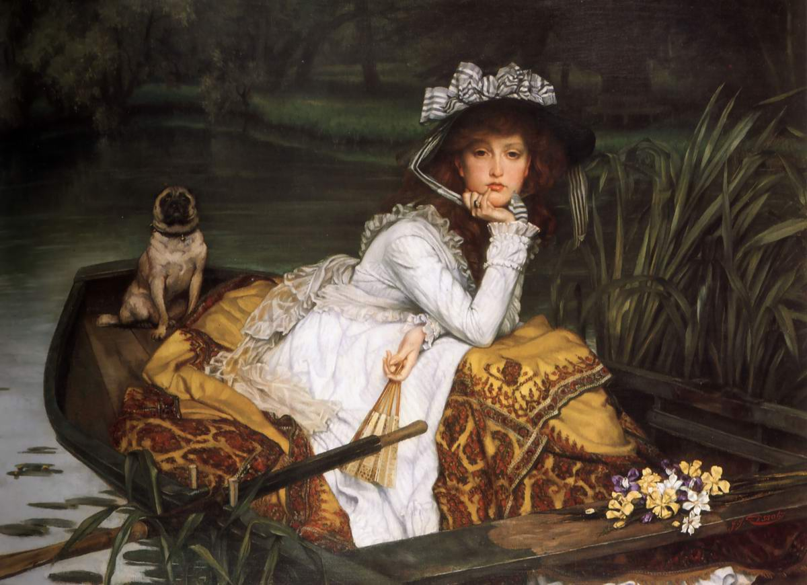
Критики считают, что его картины имеют определенное сходство с работами импрессионистов в передаче воздушной среды и характере композиций. Однако изящные полотна Тиссо более напоминают иллюстрации к светским модным журналам. По работам Тиссо можно изучать одежду того времени, настолько тщательно прописаны мельчайшие детали платьев и многочисленные аксессуары.
Темы, избираемые художником для своих работ, его манера письма имели большой успех у коллекционеров, уже к 1870 году живописец прилично зарабатывал.
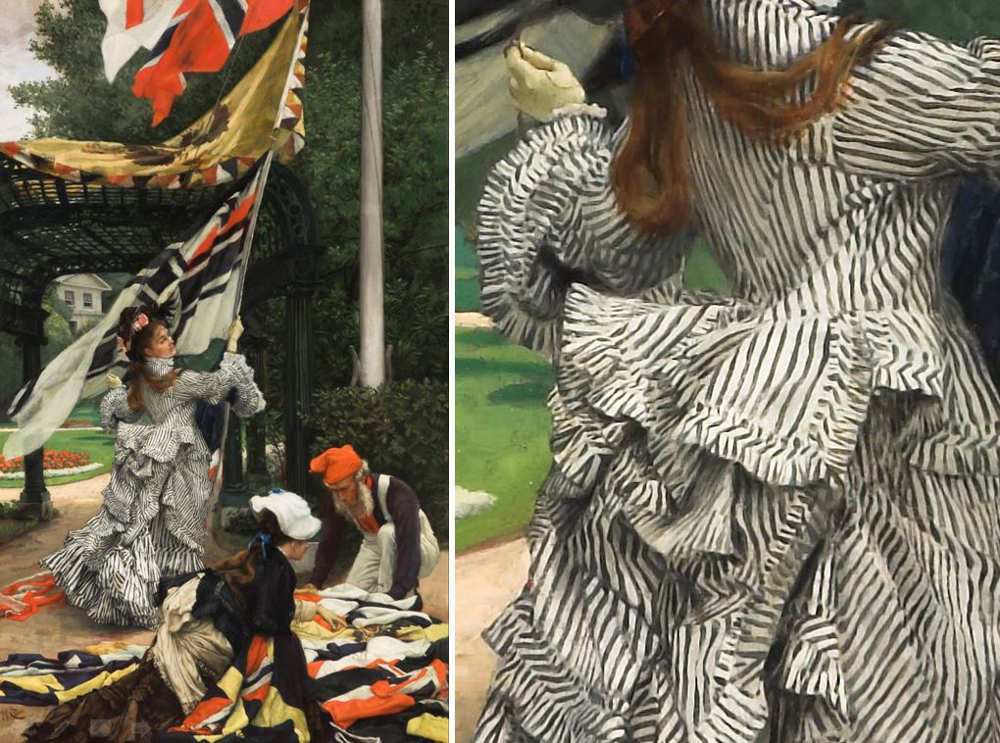
Во время франко - прусской войны Тиссо, будучи преуспевающим художником, вступает в Национальную гвардию (1871 г.).
С 1871 до 1882 Тиссо находит убежище в Лондоне, спасаясь от преследования французских властей за его сочувствие Парижской Коммуне.
В Англии он продолжает развивать свою любимую тему - сцены от жизни общества, но применительно к английским вкусам. Очень скоро он занимает высокое положение среди социальной элиты Лондона. Более того, именно в Англии Тиссо был признан непревзойденным мастером, певцом общественной жизни викторианской элиты. Как писали газеты той эпохи «…есть некая ирония в том, что непревзойденным по элегантности, блеску, отточености деталей среди английских художников считается француз…».
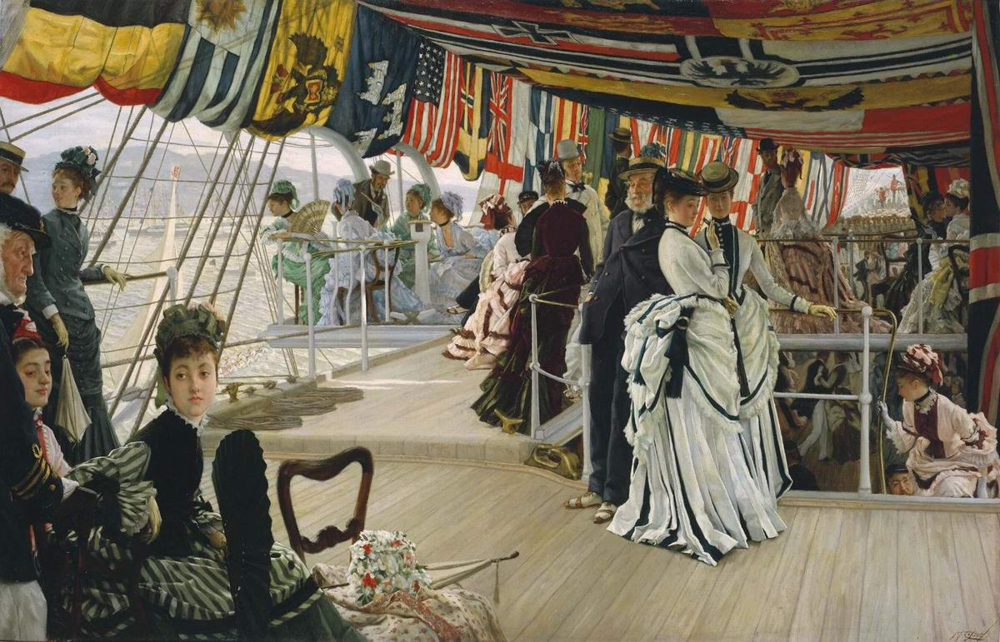
Не смотря на успех художника, выставленные в 1875 году новые картины Тиссо, среди которых были "Ball on Shipboard» (1874) и «Hush», подверглись резкой критике специалистов от искусства, увидевших в его «цветных фотографиях» картины вульгарной роскоши. Но и такая оценка критиков не смогла нанести ущерб его популярности и спросу на его творчество. К 1872 году Tissot смог купить свой собственный дом в очень популярной среди художников того времени местечке Сент-Джонс-Вуд около Лондона.
В 1873 году он получает членство в престижном Клубе Искусств.
Картины Тиссо обращались прежде всего к состоятельным британским промышленникам, и в течение 1872 г. он заработал 94 515 франков. Такие доходы обычно были характерны для высших классов.
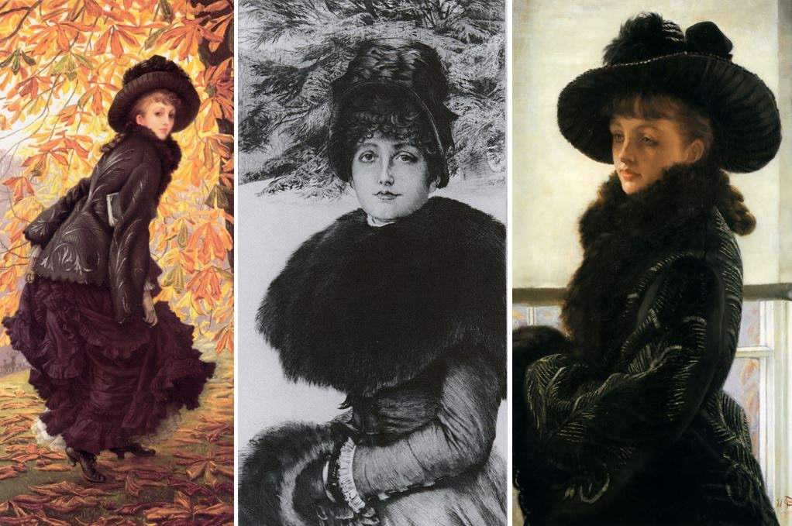
Но в 1882г. его мир обрушился. Умирает от туберкулеза его спутница жизни, возлюбленная и муза (Kathleen Newton), с которой он жил 12 лет. Он был раздавлен, потрясен, потерян. Он метался между своим католическим воспитанием и обращением к оккультной практике в попытках вернуть свою возлюбленную хотя бы на время спиритуалистических сеансов. Ни что не могло утолить его боли, он искал спасения...
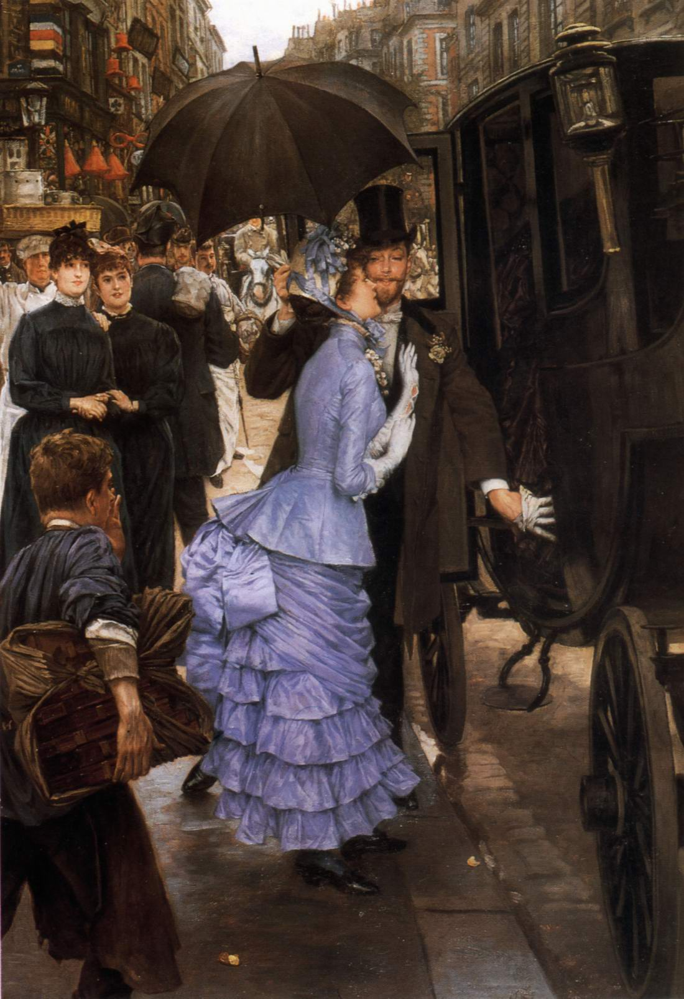
Он совершенно утратил интерес к живописанию «света», его потрясение смертью любимой женщины заставило его прибегнуть к источнику, указанному ему еще в детстве его матерью, глубоко верующей католичкой и давшей ему сответствующее воспитание.
Он обращается к вере, теперь уже вторично, и это его обращение не просто опиум, утоляющий боль и ослабляющий страдание.
Многие из его друзей-художников скептически относились к его обращению, - оно совпало с французским католическим возрождением, ставшим реакцией на светское перерождение Третьей французской республики.
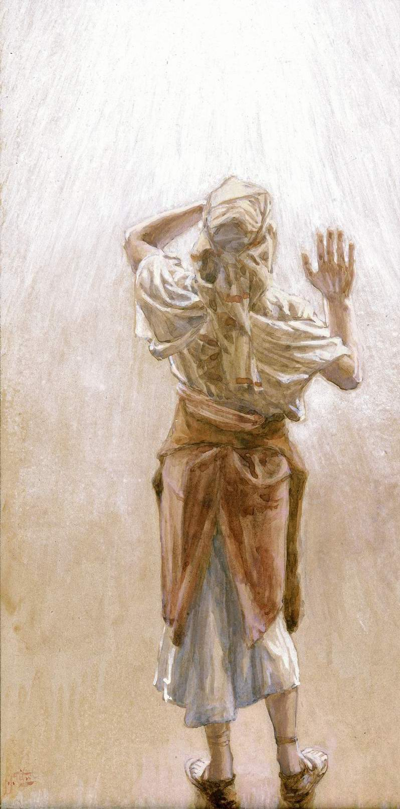
Уже не верой своей матери, но своим собственным откровением в 1885 году Тиссо находит путь к Своему Отцу. Теперь это уже осознанное и выстраданное обращение перевернуло всю его жизнь. И творчество свое он целиком посвящает Создателю. Он задумывает создать серию работ, связанных с текстам Священного Писания.
С этой целью он не раз посещает (в 1886-87 и в 1889г.) Палестину и живет там по-долгу. Обетованная земля становиться последней любовью его жизни. Практически все работы Тиссо, посвященные библейской тематике, писались или задумывались на Святой земле. Он не изображает европейцев, переодетых в «театральные» старинные костюмы. В его работах - подлинные люди пустыни...
Его цикл «Жизнь Господа нашего Иисуса Христа» («Vie de Notre Seigneur Jesus-Christ») составил 365 акварелей, которые были выставлены в 1896 в Салоне Марсова Поля (Париж). Сейчас они принадлежат Бруклинскому Музею (Brooklyn Museum).
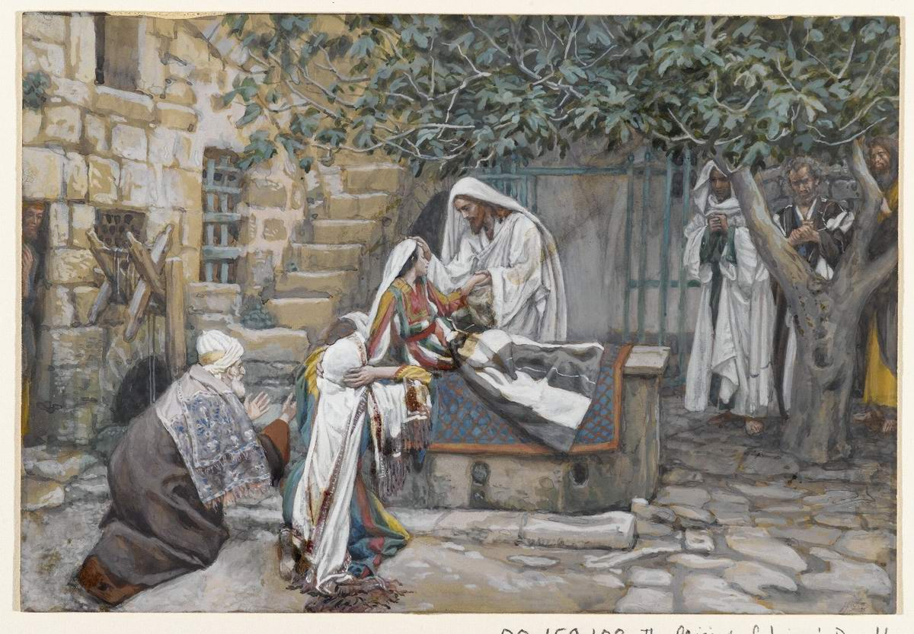
Цикл по В.Завету Тиссо закончить не успел - завершены были лишь его работы к Пятикнижию, Историческим книгам и кн. Иова. Репродукции с них были изданы в Париже и в Лондоне в 1904.
В 1902 г. Джеймс Тиссо вернулся из Палестины в Париж лишь для того, чтобы умереть на родине.
В следующей статье мы более подробно рассмотрим его библейский цикл, действительно ли права в своей оценке критика, не слишком высоко оценивая "духовный уровень" иллюстраций Тиссо к Библии.
Автор: Эфраим Калиш
ПРОДОЛЖЕНИЕ ПУБЛИКАЦИЙ О ДЖЕЙМСЕ ТИССО СМ.ЗДЕСЬ